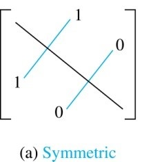
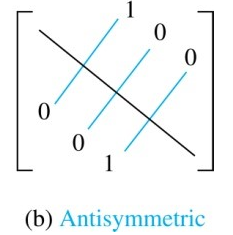

Determine whether the relation $R$ on the set of all real
numbers is reflexive, symmetric, antisymmetric,
and/or transitive, where $(x, y) ∈ R$ if and only if
$x + y = 0$
$x = ±y$
問題1 (a)(b)
page 608, Section 9.1 Exercise 6(a)(b)
Determine whether the relation $R$ on the set of all real
numbers is reflexive, symmetric, antisymmetric,
and/or transitive, where $(x, y) ∈ R$ if and only if
$x + y = 0$
$x = ±y$
Reflexive(反射性): A relation $R$ on a set $X$ is reflexive if
$(x, x) \in R, \forall x \in X.$
symmetric(對稱性): A relation $R$ on a set $X$ is symmetric if
$\forall x,y \in X, if (x,y) \in R, then (y,x) in R.$
antisymmetric(反對稱性): A relation $R$ on a set $X$ is
antisymmetric if
$\forall x,y \in X, if (x,y) \in R(A), and (y,x) \in R(B)$,
then A = B.
transitive(遞移性): A relation $R$ on a set $X$ is transitive
if
$\forall x,y,z \in X, if (x,y) \in R , (y,z) \in R, then
(x,z) \in R.$
Since
$1+1 \not = 0$, this relation is not reflexive.
Since $x+y=y+x$, it follows that
$x+y=0$ if and only if $y+x=0$, so the relation is
symmetric.
Since
$(1,-1)$ and $(-1,1)$ are both in $R$, the relation is not
antisymmetric.
The relation is
not transitive; for example, $(1,-1) ∈ R$ and $(-1,1) ∈ R$,
but $(1,1)$ $\not ∈ R$.
Since
$x = ±x$ (choosing the plug sign), the relation is
reflexive.
Since
$x = ±y$ if and only if $y = ±x$, the relation is
symmetric.
Since
$(1,-1)$ and $(-1,1)$ are both in $R$, the relation is not
antisymmetric.
The relation
is transitive, essentially because the product of 1's and
-1's is $±1$.
Question 1
問題1 (c)(d)
page 608, Section 9.1 Exercise 6(c)(d)
Determine whether the relation $R$ on the set of all real
numbers is reflexive, symmetric, antisymmetric,
and/or transitive, where $(x, y) ∈ R$ if and only if
c) $x − y$ is a rational number
d) $x = 2y$
問題1 (c)(d)
page 608, Section 9.1 Exercise 6(c)(d)
Determine whether the relation $R$ on the set of all real
numbers is reflexive, symmetric, antisymmetric,
and/or transitive, where $(x, y) ∈ R$ if and only if
c) $x − y$ is a rational number
d) $x = 2y$
Reflexive(反射性): A relation $R$ on a set $X$ is reflexive if
$(x, x) \in R, \forall x \in X.$
symmetric(對稱性): A relation $R$ on a set $X$ is symmetric if
$\forall x,y \in X, if (x,y) \in R, then (y,x) in R.$
antisymmetric(反對稱性): A relation $R$ on a set $X$ is
antisymmetric if
$\forall x,y \in X, if (x,y) \in R(A), and (y,x) \in R(B)$,
then A = B.
transitive(遞移性): A relation $R$ on a set $X$ is transitive
if
$\forall x,y,z \in X, if (x,y) \in R , (y,z) \in R, then
(x,z) \in R.$
c) The relation
is reflexive, since $x-x=0$ is a rational number.
The relation
is symmetric, because if $x-y$ is rational, then so is
$-(x-y) = y-x$.
Since
$(1,-1)$ and $(-1,1)$ are both in $R$, the relation is not
antisymmetric.
To see that the relation
is transitive, note that if $(x,y) ∈ R$ and $(y,z) ∈ R$,
then $x-y$ and $y-z$ are rational numbers. Therefore their
sum $x-z$ is rational, and that means that $(x,z) ∈
R$.
d) Since
$1 \not = 2．1$,this relation is not reflexive.
It is
not symmetric, since $(2,1) ∈ R$, but $(1,2) \not ∈
R$.
To see that it
is antisymmetric, suppose that $x = 2y$ and $y = 2x$. Then
$y = 4y$, from which it follows that $y = 0$ and hence $x =
0$. Thus the only time that $(x,y)$ and $(y,z)$ are both is
$R$ is when $x = y$ (and both are 0).
This relation is clearly
not transitive, since $(4,2) ∈ R$ and $(2,1) ∈ R$, but
$(4,1) \not ∈ R$.
Question 1
問題1 (e)(f)
page 608, Section 9.1 Exercise 6(e)(f)
Determine whether the relation $R$ on the set of all real
numbers is reflexive, symmetric, antisymmetric,
and/or transitive, where $(x, y) ∈ R$ if and only if
e) $xy ≥ 0$
f) $xy = 0$
問題1 (e)(f)
page 608, Section 9.1 Exercise 6(e)(f)
Determine whether the relation $R$ on the set of all real
numbers is reflexive, symmetric, antisymmetric,
and/or transitive, where $(x, y) ∈ R$ if and only if
e) $xy ≥ 0$
f) $xy = 0$
Reflexive(反射性): A relation $R$ on a set $X$ is reflexive if
$(x, x) \in R, \forall x \in X.$
symmetric(對稱性): A relation $R$ on a set $X$ is symmetric if
$\forall x,y \in X, if (x,y) \in R, then (y,x) in R.$
antisymmetric(反對稱性): A relation $R$ on a set $X$ is
antisymmetric if
$\forall x,y \in X, if (x,y) \in R(A), and (y,x) \in R(B)$,
then A = B.
transitive(遞移性): A relation $R$ on a set $X$ is transitive
if
$\forall x,y,z \in X, if (x,y) \in R , (y,z) \in R, then
(x,z) \in R.$
e) This relation
is reflexive since squares are always nonnegative.
It
is clearly symmetric (the roles of x and y in the statement
are interchangeable.)
It
is not antisymmetric, since $(2,3)$ and $(3,2)$ are both in
$R$.
It
is not transitive; for example, $(1,0) ∈ R$ and $(0,-2) ∈
R$, but $(1,-2) \not ∈ R$.
f) This
is not reflexive, since $(1,1) \not ∈ R$.
It
is clearly symmetric (the roles of x and y in the statement
are interchangeable.)
It
is not antisymmetric, since $(2,0)$ and $(0,2)$ are both in
$R$.
It
is not transitive; for example, $(1,0) ∈ R$ and $(0,-2) ∈
R$, but $(1,-2) \not ∈ R$.
Question 1
問題1 (g)(h)
page 608, Section 9.1 Exercise 6(g)(h)
Determine whether the relation $R$ on the set of all real
numbers is reflexive, symmetric, antisymmetric,
and/or transitive, where $(x, y) ∈ R$ if and only if
g) $x = 1$
h) $x = 1$ or $y = 1$
問題1 (g)(h)
page 608, Section 9.1 Exercise 6(g)(h)
Determine whether the relation $R$ on the set of all real
numbers is reflexive, symmetric, antisymmetric,
and/or transitive, where $(x, y) ∈ R$ if and only if
g) $x = 1$
h) $x = 1$ or $y = 1$
Reflexive(反射性): A relation $R$ on a set $X$ is reflexive if
$(x, x) \in R, \forall x \in X.$
symmetric(對稱性): A relation $R$ on a set $X$ is symmetric if
$\forall x,y \in X, if (x,y) \in R, then (y,x) in R.$
antisymmetric(反對稱性): A relation $R$ on a set $X$ is
antisymmetric if
$\forall x,y \in X, if (x,y) \in R(A), and (y,x) \in R(B)$,
then A = B.
transitive(遞移性): A relation $R$ on a set $X$ is transitive
if
$\forall x,y,z \in X, if (x,y) \in R , (y,z) \in R, then
(x,z) \in R.$
g) This
is not reflexive, since $(2,2) \not ∈ R$.
It
is not symmetric, since $(1,2) ∈ R$ but $(2,1) \not ∈
R$.
It
is antisymmetric, because if $(x,y) ∈ R$ and $(y,x) ∈ R$,
then $x = 1$ and $y = 1$, so $x = y$.
It
is transitive, because if $(x,y) ∈ R$ and $(y,z) ∈ R$, then
$x = 1$ (and $y = 1$, although that doesn't matter), so
$(x,z) ∈ R$.
h) This
is not reflexive, since $(2,2) \not ∈ R$.
It
is clearly symmetric (the roles of x and y in the statement
are interchangeable.)
It
is not antisymmetric, since $(2,1)$ and $(1,2)$ are both in
$R$.
It
is not transitive; for example, $(3,1) ∈ R$ and $(1,7) ∈
R$, but $(3,7) \not ∈ R$.
Question 2
問題2
page 619, Section 9.2 Exercise 2
Which 4-tuples are in the relation {$(a, b, c, d) ∣ a, b, c$,
and $d$ are positive integers with $abcd = 6$}?
問題2
page 619, Section 9.2 Exercise 2
Which 4-tuples are in the relation
{$(a, b, c, d) ∣ a, b, c$, and $d$ are positive integers with
$abcd = 6$}?
列舉所有abcd=6的排列
We have to find all the solutions to this equation,making sure
to include all the permutations. The 4 tuples are
Let $R_1$ and $R_2$ be relations on a set A represented by the
matrices
$ M_{R_1}= \begin{bmatrix} 0&1&0\\1&1&1\\1&0&0
\end{bmatrix}\quad $ and $ M_{R_2}= \begin{bmatrix}
0&1&0\\0&1&1\\1&1&1 \end{bmatrix}\quad $
Find the matrices that represent
a) $R_1\cup{R_2}$
b) $R_1\cap{R_2}$
問題3(a)(b)
page 627, Section 9.3 Exercise 14(a)(b)
Let $R_1$ and $R_2$ be relations on a set A represented by the
matrices
$ M_{R_1}= \begin{bmatrix} 0&1&0\\1&1&1\\1&0&0
\end{bmatrix}\quad $ and $ M_{R_2}= \begin{bmatrix}
0&1&0\\0&1&1\\1&1&1 \end{bmatrix}\quad $
Find the matrices that represent
a) $R_1\cup{R_2}$
b) $R_1\cap{R_2}$
$ \cup $ 指的是對矩陣元素做element-wise聯集
$ \cap $ 指的是對矩陣元素做element-wise交集
a. The matrix for the union is formed by taking the join :
$\begin{bmatrix} 0&1&0\\1&1&1\\1&1&1 \end{bmatrix}\quad$
b. The matrix for the intersection is formed by taking the
meet :
$\begin{bmatrix} 0&1&0\\0&1&1\\1&0&0 \end{bmatrix}\quad$
Question 3
問題3(c)(d)
page 627, Section 9.3 Exercise 14(c)(d)
Let $R_1$ and $R_2$ be relations on a set A represented by the
matrices
$ M_{R_1}= \begin{bmatrix} 0&1&0\\1&1&1\\1&0&0
\end{bmatrix}\quad $ and $ M_{R_2}= \begin{bmatrix}
0&1&0\\0&1&1\\1&1&1 \end{bmatrix}\quad $
Find the matrices that represent
c) $R_2\circ{R_1}$
d) $R_1\circ{R_1}$
問題3(c)(d)
page 627, Section 9.3 Exercise 14(c)(d)
Let $R_1$ and $R_2$ be relations on a set A represented by the
matrices
$ M_{R_1}= \begin{bmatrix} 0&1&0\\1&1&1\\1&0&0
\end{bmatrix}\quad $ and $ M_{R_2}= \begin{bmatrix}
0&1&0\\0&1&1\\1&1&1 \end{bmatrix}\quad $
Find the matrices that represent
c. The matrix is the Boolean product
$M_{R_1}\odot{M_{R_2}}$:
$\begin{bmatrix} 0&1&1\\1&1&1\\0&1&0 \end{bmatrix}\quad$
b. The matrix is the Boolean product
$M_{R_1}\odot{M_{R_1}}$:
$\begin{bmatrix} 1&1&1\\1&1&1\\0&1&0 \end{bmatrix}\quad$
Question 3
問題3(e)
page 627, Section 9.3 Exercise 14(e)
Let $R_1$ and $R_2$ be relations on a set A represented by the
matrices
$ M_{R_1}= \begin{bmatrix} 0&1&0\\1&1&1\\1&0&0
\end{bmatrix}\quad $ and $ M_{R_2}= \begin{bmatrix}
0&1&0\\0&1&1\\1&1&1 \end{bmatrix}\quad $
Find the matrices that represent
e) $R_1\oplus{R_2}$
問題3(e)
page 627, Section 9.3 Exercise 14(e)
Let $R_1$ and $R_2$ be relations on a set A represented by the
matrices
$ M_{R_1}= \begin{bmatrix} 0&1&0\\1&1&1\\1&0&0
\end{bmatrix}\quad $ and $ M_{R_2}= \begin{bmatrix}
0&1&0\\0&1&1\\1&1&1 \end{bmatrix}\quad $
Find the matrices that represent
e) $R_1\oplus{R_2}$
$XOR$運算符指的是相同處為0，相異處為1。
兩個矩陣做$XOR$，指的是矩陣元素element-wise做$XOR$。
e. The matrix is the entrywise $XOR$ :
$\begin{bmatrix} 0&0&0\\1&0&0\\0&1&1 \end{bmatrix}\quad$
Question 4
問題4
page 638, Section 9.4 Exercise 20
Let $R$ be the relation that contains the pair $(a, b)$ if $a$
and $b$ are cities such that there is a direct nonstop airline
flight from $a$ to $b$. When is $(a, b)$ in
a) $R^2$?
b) $R^3$?
c) $R^*$?
問題4
page 638, Section 9.4 Exercise 20
Let $R$ be the relation that contains the pair $(a, b)$
if $a$ and $b$ are cities such that there is a direct nonstop
airline flight from $a$ to $b$.
When is $(a, b)$ in
a) $R^2$?
b) $R^3$?
c) $R^*$?
a. The pair $(a,b)$ in $R^2$ precisely when
there is a city $c$ such that there is a dierct flight from
$a$ to $c$ and a dierct flight from $c$ to $b$
-- in other words, when it is possible to fly from $a$ to $b$
with a scheduled stop (and possibly a plane change) in some
intermidiate city.
b. The pair $(a,b)$ in $R^3$ precisely when
there is a city $c$ and $d$ such that there is a dierct
flight from $a$ to $c$, a dierct flight from $c$ to $d$ and
a dierct flight from $d$ to $b$
-- in other words, when it is possible to fly from $a$ to $b$
with two scheduled stops (and possibly a plane change at one
or both) in some intermidiate city.
c. The pair $(a,b)$ in $R^*$ precisely when
it is possible to fly from $a$ to $b$.
Question 5
問題5
page 647, Section 9.5 Exercise 24
Determine whether the relations represented by these zero–one
matrices are equivalence relations.
$a) \begin{bmatrix} 1&1&1\\0&1&1\\1&1&1 \end{bmatrix}\quad $ $b)
\begin{bmatrix} 1&0&1&0\\0&1&0&1\\1&0&1&0\\0&1&0&1
\end{bmatrix}\quad $ $c) \begin{bmatrix}
1&1&1&0\\1&1&1&0\\1&1&1&0\\0&0&0&1 \end{bmatrix}\quad $
問題5
page 647, Section 9.5 Exercise 24
Determine whether the relations represented by these zero–one
matrices are
equivalence relations.
$a) \begin{bmatrix} 1&1&1\\0&1&1\\1&1&1 \end{bmatrix}\quad $ $b)
\begin{bmatrix} 1&0&1&0\\0&1&0&1\\1&0&1&0\\0&1&0&1
\end{bmatrix}\quad $ $c) \begin{bmatrix}
1&1&1&0\\1&1&1&0\\1&1&1&0\\0&0&0&1 \end{bmatrix}\quad $
Equivalence Relations: A relation on a set A is called an
equivalence relation if it is
reflexive, symmetric, and transitive.
If R is a reflexive relation, all the elements on the main
diagonal of $M_R$ are equal to 1.
R is a symmetric relation,
if and only if $m_{ij}$ = 1 whenever $m_{ji}$ = 1.

a) This is not an equivalence relation, since it
is not symmetric.
b) This is an equivalence relation; one equivalence class
consists of the first and third elements, and the other
consists of the second and fourth elements.
c) This is an equivalence relation; one equivalence class
consists of the first, second and third elements, and the
other consists of the fourth elements.
Question 6
問題6
page 662, Section 9.6 Exercise 8
Determine whether the relations represented by these zero–one
matrices are partial orders.
$a) \begin{bmatrix} 1&0&1\\1&1&0\\0&0&1 \end{bmatrix}\quad $ $b)
\begin{bmatrix} 1&0&0\\0&1&0\\1&0&1 \end{bmatrix}\quad $ $c)
\begin{bmatrix} 1&0&1&0\\0&1&1&0\\0&0&1&1\\1&1&0&1
\end{bmatrix}\quad $
問題6
page 662, Section 9.6 Exercise 8
Determine whether the relations represented by these zero–one
matrices are
partial orders.
$a) \begin{bmatrix} 1&0&1\\1&1&0\\0&0&1 \end{bmatrix}\quad $ $b)
\begin{bmatrix} 1&0&0\\0&1&0\\1&0&1 \end{bmatrix}\quad $ $c)
\begin{bmatrix} 1&0&1&0\\0&1&1&0\\0&0&1&1\\1&1&0&1
\end{bmatrix}\quad $
A relation R on a set S is called a partial ordering, or
partial order, if it is
reflexive, antisymmetric, and transitive.
If R is a reflexive relation, all the elements on the main
diagonal of $M_R$ are equal to 1.
R is an antisymmetric relation,
if and only if $m_{ij}$ = 0 or $m_{ji}$ = 0 when i≠
j.

a) This relation is $(1,1),(1,3),(2,1),(2,2),(3,3)$. It is
clearly reflexive and antisymmetric. The only one pairs that
might present
problems with transitivity are the nondiagonal pairs,
$(2,1)$ and $(1,3)$.
If the relation were to be transitive, then we would
also need the pair $(2,3)$
in the relation.
Since it is not there, the relation is not a partial
order.
b) Reasoning as in part (a), we see that this relation is a
partial order, since the pair
$(3,1)$ can cause no problem with transitivity.
c) A little trial and error shows that this relation is
not transitive ($(1,3)$ and $(3,4)$ are present, but not
$(1,4)$)
and Therefore not a partial order.